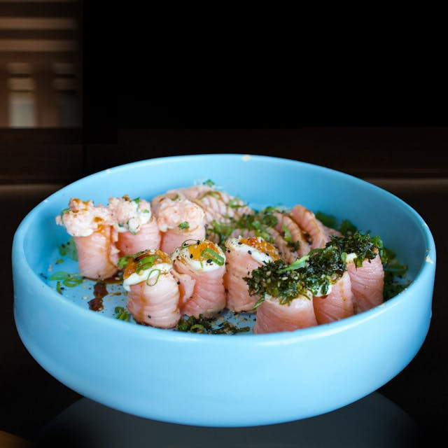

Entertainment
Most people visit Taniti to enjoy the beaches, explore our lush rainforest, and visit the volcano.
However, there are other things to do, including:
- Visit a local history museum
- Chartered fishing tours
- Snorkeling and scuba diving
- Zip-lining through the rainforest
- Visit one of our many pubs or a microbrewery
- Dance at a new dance club
- Take a helicopter tour
- Visit an arcade
- Visit an art gallery
- Bowling
- Coming next year: Visit our brand new nine hole golf course
Dining

Taniti currently has 10 restaurants: five serve mostly local fish and rice, three serve American-style meals, and two serve Pan-Asian cuisine.
More of a home chef sort? Taniti has two supermarkets, two smaller grocery stores, and one convenience store that is open 24 hours a day.